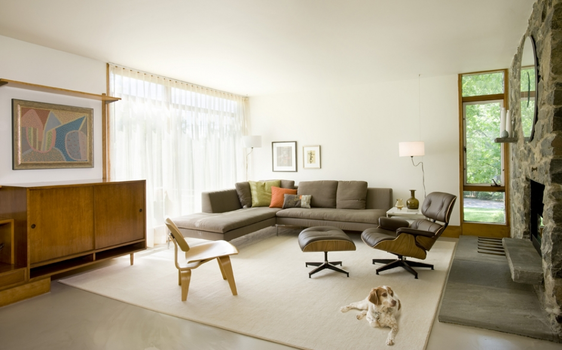
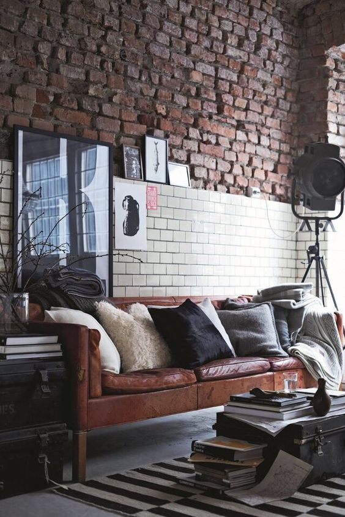
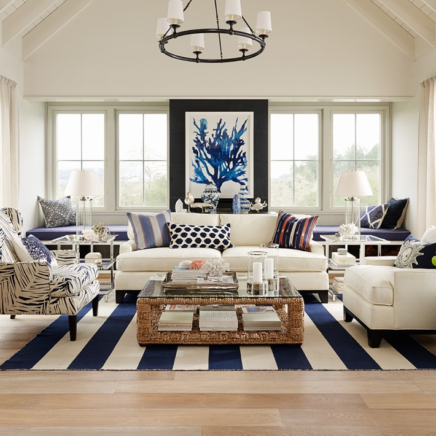
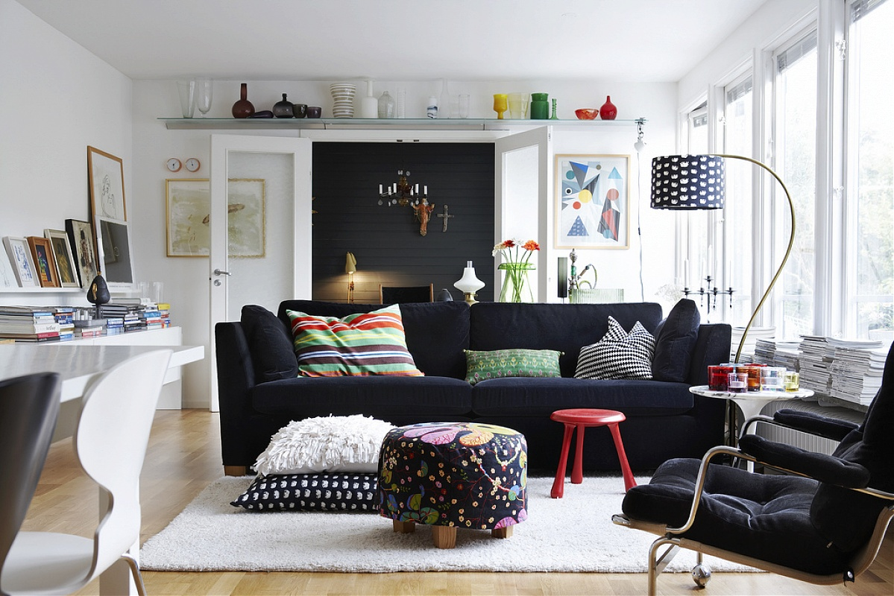
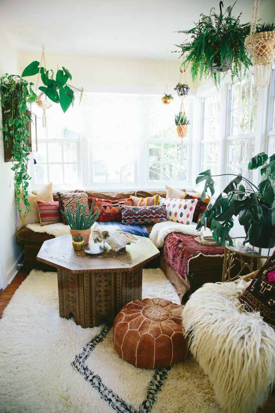
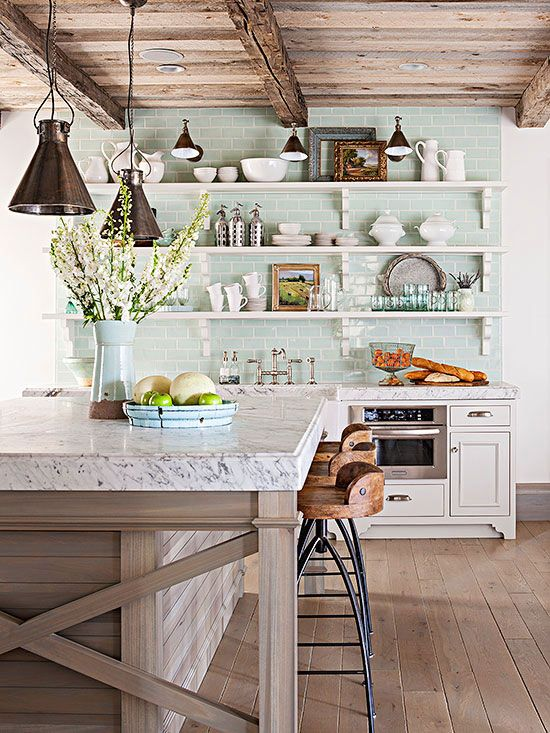
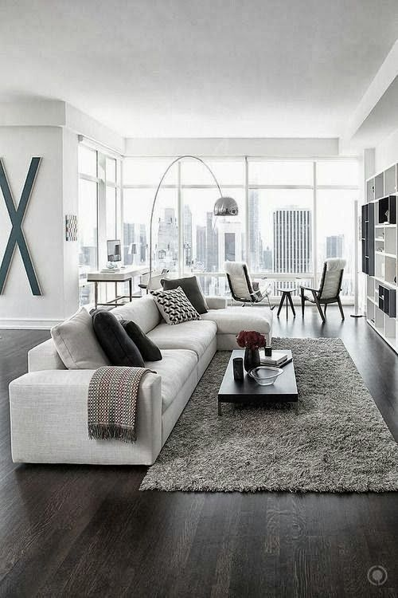
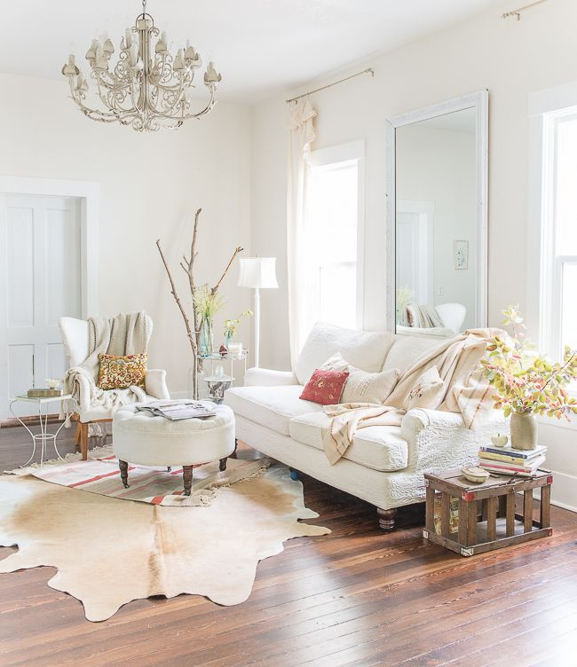

MID CENTURY MODERN
The mid-1900s produced some of the most iconic pieces in modern design. It is characterized by refined lines, minimalist silhouettes, and natural shapes. From Saarinen, Niemeyer, Eames, Noguchi, Jacobsen and beyond, the mid-century modern masters defined creative ways to use new materials like molded plastic, plywood, and aluminum in industrial design. Its pieces are highly versatile and can complement a myriad of design styles.
INDUSTRIAL
This is a look that hearkens back to the turn-of-the-century industrial era. It emphasizes liberal use of exposed steel with distressed wooden elements, frequently complemented by exposed brick walls. The modern variant commonly includes copper-tone accents. In terms of general feel, industrial decor is often rustic and mature.
NAUTICAL
Warm, relaxing, and positive. Nautical decor (also referred to as coastal or cottage decor) reflects the New England beach house spirit. This interior design style is based on white or sand colored foundation, with blue as the primary accent color.
SCANDIVIAN
Featuring gentle contours, playful accent colors, and a balance of engineered and organic materials, Scandinavian furniture are simple, contemporary, and functional. Many Scandinavian designs employ Bauhaus principles and is characterized by fluid lines, focus on object proportions, and populist appeal. A great majority of Scandinavian interiors use white with gray tones as the foundation colors.
BOHEMIAN
Bohemian decor captures the carefree and adventurous spirit of the avant-garde lifestyle. It features creative application of rich patterns and vibrant colors, especially those with red or purple tones. The key is to carefully present a purposefully “messy” look. Layer on textiles (throws, pillows, rugs, tapestry) for a warm ambience.
FARMHOUSE
Farmhouse decor is a modern approach to cabin-inspired interior design. Mostly transitional in nature with some traditional elements mixed in, farmhouse aesthetic should transport your imagination to French Provence. Careful arrangement of vases and planters will really stylize your home.
URBAN-MODERN
Urban interior design stems from the modern designer lofts in the major cities. Taking cues from its cosmopolitan environment, urban modern is a fusion of various opposing and complementary traits. Minimalist modern, glamorous chic, ethnic heirlooms, and edgy experimental designs all collide in a distinctively 21st-century setting.
SHABBY-CHIC
Shabby chic decor emphasizes vintage elements to recreate the antique flea market look. The furniture are characterized by their aged appearance, with distressed wood composition covered in sanded milk paint to show signs of wear and tear.